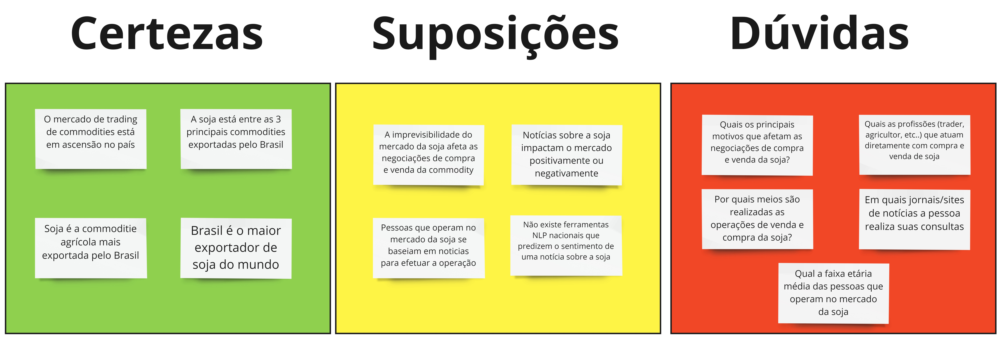

Análise do Mercado
Entendendo o mercado
A partir de uma análise abrangente do mercado da soja, surgiram muitos insights sobre como poderíamos criar um produto que resolvesse os problemas mencionados no contexto geral. Considerando esses estudos de mercado, muitas perguntas e afirmações surgiram para nós da equipe e, afim de organizar nossas ideias, elaboramos uma matriz CSD que clusteriza as "Certezas", "Suposições" e "Dúvidas" de um determinado assunto.
Essa Matriz CSD não só nos ajudou a esclarecer nossas ideias, mas também serviu como base para as pesquisas de mercado que conduzimos e para toda a descoberta do Radar da Soja.

Pesquisa de mercado
O objetivo dessa pesquisa foi responder as suposições e dúvidas da equipe Comitiva Esperança, principalmente sobre as pessoas que atuam com o mercado da soja e seus problemas enfretados.
Para realizar a pesquisa, foi criado um formulário no Google contendo diversas perguntas sobre questões relacionadas aos problemas encontrados mercado da soja, as pessoas que atuam com essa commodity e sobre as notícias desse mercado. O formulário foi divulgado inicialmente em grupos do Facebook e WhatsApp e, posteriormente, individualmente para cada pessoa nessas redes.
Estratégia para divulgação
Durante o tempo vigente da pesquisa, foram utilizados duas estratégias distintas para divulgação da pesquisa.
A primeira estratégia utilizada foi divulgar a pesquisa em grupos relacionados ao agronegócio. No entanto, essa abordagem não se mostrou eficaz devido à falta de personalização e interação humana. Nós apenas compartilhamos o formulário nessas comunidades e esperamos pelas respostas, o que resultou em apenas uma única resposta obtida por meio desse método.
A segunda estratégia adotada consistiu em divulgar o formulário de maneira personalizada e humanizada, conversando individualmente com cada pessoa. Essa abordagem nos trouxe resultados significativos, pois as pessoas se sentiram envolvidas em algo maior, que era ajudar universitários a construir um produto valioso para eles. Como resultado dessa estratégia, conseguimos obter 9 respostas para nossa pesquisa.
Números atingidos
Uma das maiores dificuldades para a realização dessa pesquisa foi o contato com pessoas do mercado, isso reflete diretamente na taxa de resposta da pesquisa: foram enviadas 231 mensagens individualizadas para participantes de grupos de agronegócio e obtivemos 10 respostas em nosso formulário.
Isso demonstrou uma característica para esse grupo de pessoas, a falta de tempo. Normalmente ficam o dia inteiro atarefados com suas atividades de trabalho e não conseguem encontrar momentos para responder formulários em seu WhatsApp.
Pesquisa para entendimento do mercado
Abaixo segue os dados obtidos para cada uma das perguntas realizadas.

Pergunta criada para obter dados de visualização de notícias sobre o mercado da soja
Resultado obtidos
A pesquisa realizada com profissionais do mercado da soja trouxe importantes insights sobre as principais necessidades e problemas enfrentados por essas pessoas.
Com base na pesquisa e após análise minuciosa dos dados coletados, nós da Comitiva Esperança tivemos a oportunidade de identificar os nossos potenciais usuários e clientes.
Essas informações foram fundamentais para que pudéssemos criar um produto sob medida que atenda às necessidades desses consumidores e resolva os problemas encontrados.
Tabela de Versionamento
| Data | Versão | Descrição | Autor(es) |
|---|---|---|---|
| 10/05/2023 | 1.0 | Criação do documento | Vitor Lameirão |